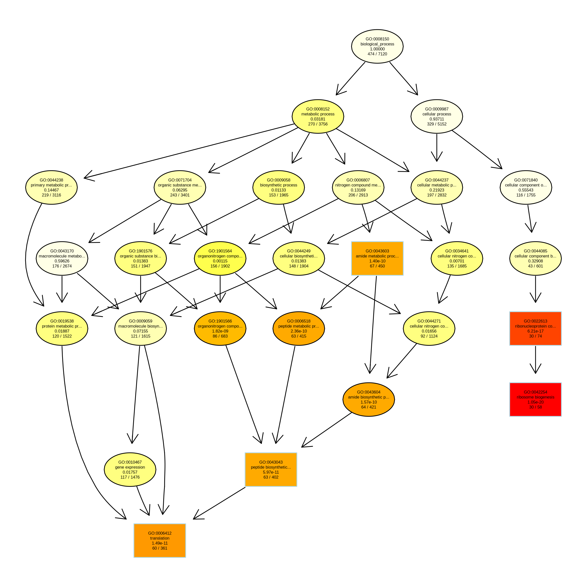

Chapter 8 Gene Ontology enrichment analysis
Gene Ontology (GO) is a method off classifying gene function in a structured way and is split into three subgroupings: "biological process (e.g., signal transduction), molecular function (e.g., ATPase activity) and cellular component (e.g., ribosome)". Genes are associated with particular GO terms via GO annotations and each gene can have multiple annotations associated with it. You can obtain GO annotations from the Gene Ontology website, from species-specific databases, or they can be annotated to a reference gennome using software such as blast2GO.
GO enrichment analysis finds which GO terms are over-represented (or under-represented) using annotations for a set of genes (in this case genes which are significantly differentially expressed between males and females).
We will perform GO enrichment analysis using the topGO package in R. We strongly recommend reading through the topGO manual when you come to analyse your own data.
First create a new notebook called "Chp08-GO_enrichment".
Load the topGO package and load an example gene dataset, this also loads a function to define a list of differentially expressed genes that we will use in our analysis. We will also re-load our results from the DGE analysis.
library(topGO)
library(Rgraphviz)
data(geneList)
load("DESeq2_DGE_results_sex.RData")We will now modify the geneList object to contain the results we obtained from our DGE analysis containing the adjusted p-values and the names of the genes.
# extract the adjusted p-values from our results object
geneList <- res$padj
# add the gene names from our results to our list of adjusted p-values
names(geneList) <- rownames(res)
# remove genes with an adjusted p-value recorded as NA
geneList<-na.omit(geneList)We can use the topDiffGenes function to extract genes with a adjusted p-value of less than 0.01. This will be used as our list of genes of interest for our GO enrichment analysis.
sum(topDiffGenes(geneList))We have 666 genes which are significantly differentially expressed when using a cutoff of 0.01.
We will now read in a list of genes and their associated biological process GO annotations.
geneID2GO <- readMappings("geneanno_goBio.tsv")
head(geneID2GO)You can see we now have a list of GO annotations associated with each gene ID.
We now have all the data we need to make a topGOdata object. This will contain all the information needed to perform the enrichment analysis including the gene lists we've made, the GO annotations and the GO hierarchical structure.
sampleGOdata <- new("topGOdata",
ontology = "BP",
allGenes = geneList,
geneSel = topDiffGenes,
nodeSize = 10,
annot = annFUN.gene2GO,
gene2GO = geneID2GO)- ontology = specifies which ontology to use (biological processes, cellular components or molecular function)
- allGenes = a list of all genes which we tested in our DGE analysis with their associated adjusted p-values
- geneSel = select genes using the topDiffGenes function (genes with a adjusted p-value < 0.01) to use as our set of genes of interest
- nodeSize = remove any annotated GO terms which have less than X number of genes associated with them (in this case 10)
- annot = annFUN.gene2GO function is used to extract the gene-to-GO mappings from the geneID2GO object
- gene2GO = our list of genes and their associated GOs
If you check the topGOdata object we can see a summary of the data we added.
sampleGOdataNow we have the topGOdata object ready we can start with the enrichment analysis. Here we run the analysis using the Fisher’s exact test statistic using the runTest function and test whether there is an over-representation of GO terms within the group of differentially expressed genes. Each GO category is tested independently with the algorithm classic.
resultFisher <- runTest(sampleGOdata, algorithm = "classic", statistic = "fisher")
resultFisherThe enrichment analysis has identified 63 significantly enriched GO categories (p < 0.01).
We can then pull out the most significant GO terms from the results and the corresponding p-values using the function GenTable. In this case we will print the top 10 GO categories.
allRes <- GenTable(sampleGOdata, classicFisher = resultFisher,
orderBy = "classicFisher", topNodes = 10)
allResPlot a figure of the most significant GO terms. We will plot the top 5 to make it easier to view the plot.
showSigOfNodes(sampleGOdata, score(resultFisher), firstSigNodes = 5, useInfo = 'all')This plot is nice but it's quite hard to read. Instead we will write this plot to a png file to view it.
png(filename = "GO.png", res = 300,
units = "mm", height = 200, width = 200)
showSigOfNodes(sampleGOdata, score(resultFisher), firstSigNodes = 5, useInfo = 'all')
dev.off()You can open the png file you just made by clicking on the Jupyter 'home page' tab and then clicking on the GO.png file you just created. You will then be able to zoom in to see the text of the plot in more details.

This plots the top 5 GO terms which have been identified using the Fishers test. The 5 most significant terms are plotted as rectangles. The colour of the rectangles represent significance (dark red most significant, yellow least significant). Within each node, useful information is printed:
- Line 1: GO identifier
- Line 2: trimmed GO name
- Line 3: p-value
- Line 4: number of significant genes and the total number of genes annotated to the respective GO term
Our top 5 enriched GO terms for sex-biased genes were found to be:
- ribosome biogenesis
- ribonucleoprotein complex biogenesis
- cellular amide metabolic process
- peptide metabolic process
- translation
8.1 Final recap

In this workshop we started with raw reads, which we cleaned (Trimmomatic), aligned to a reference genome (HISAT2) and then produced a set of gene counts per sample (htseq-count). We then performed a differential gene expression analysis (DeSeq2) and GO enrichment analysis (topGO) to find out which genes and pathways were differentially expressed and enriched in response to a variable of interest.
We performed this analysis using a small subset of samples and fitted a simple model to examine a single variable. In your own analysis it is extremely important to consider your experimental design, the number of replicates you need, the amount of sequencing per sample and the best model to fit to be able to answer your specific biological question.